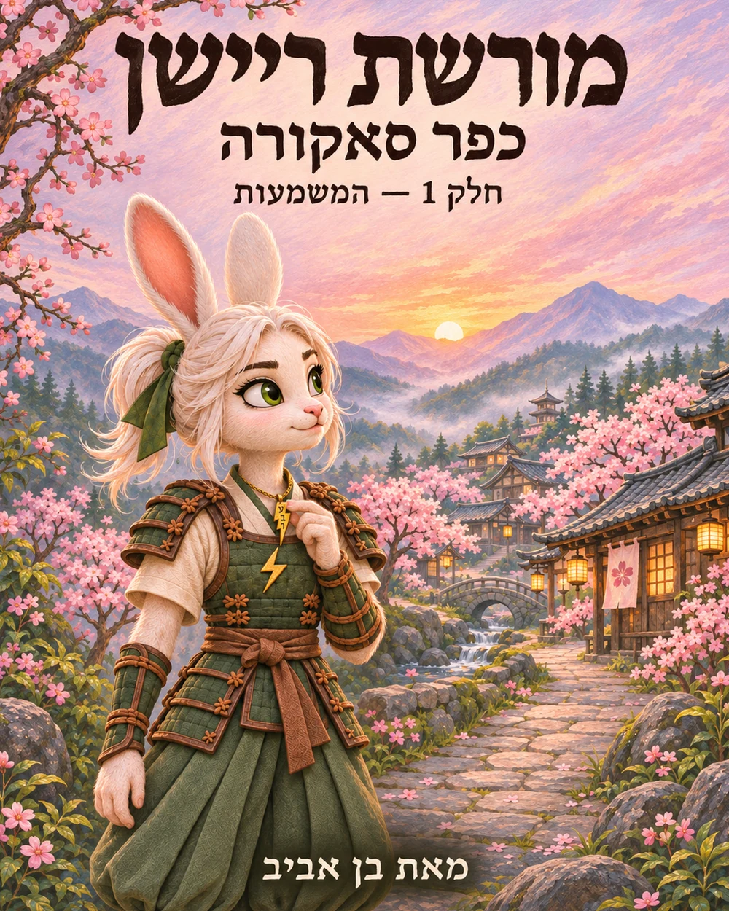
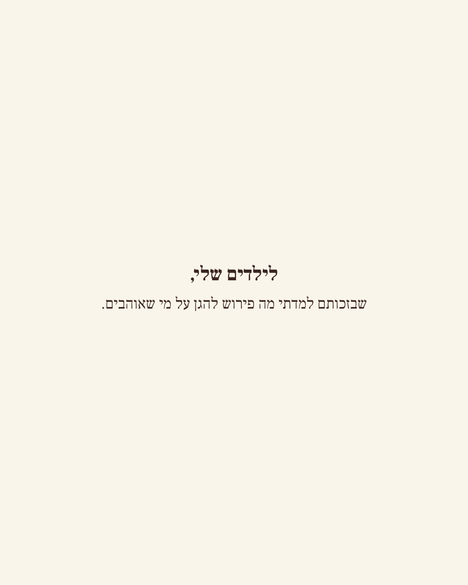
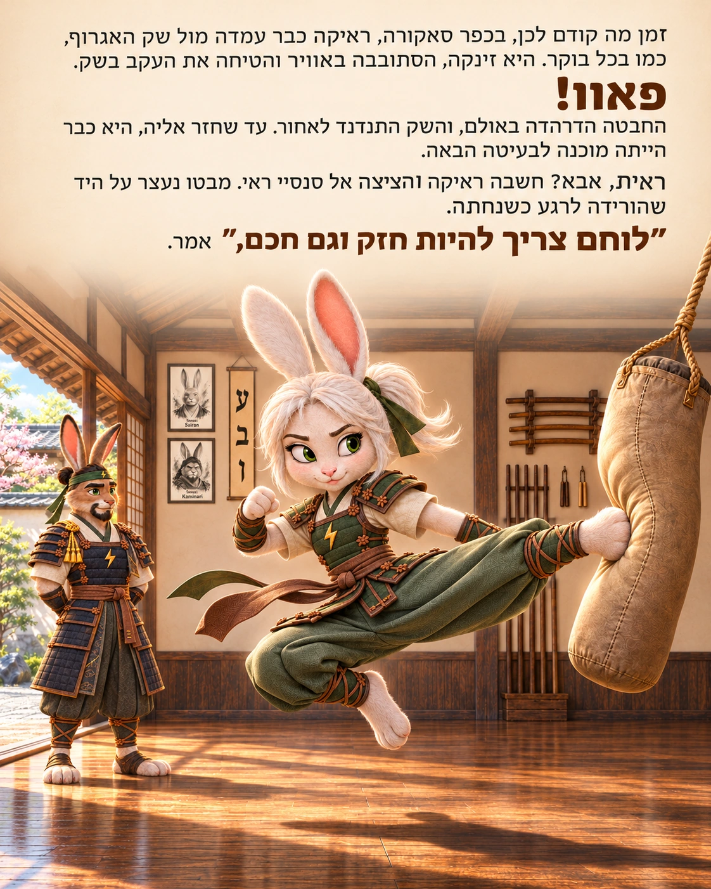
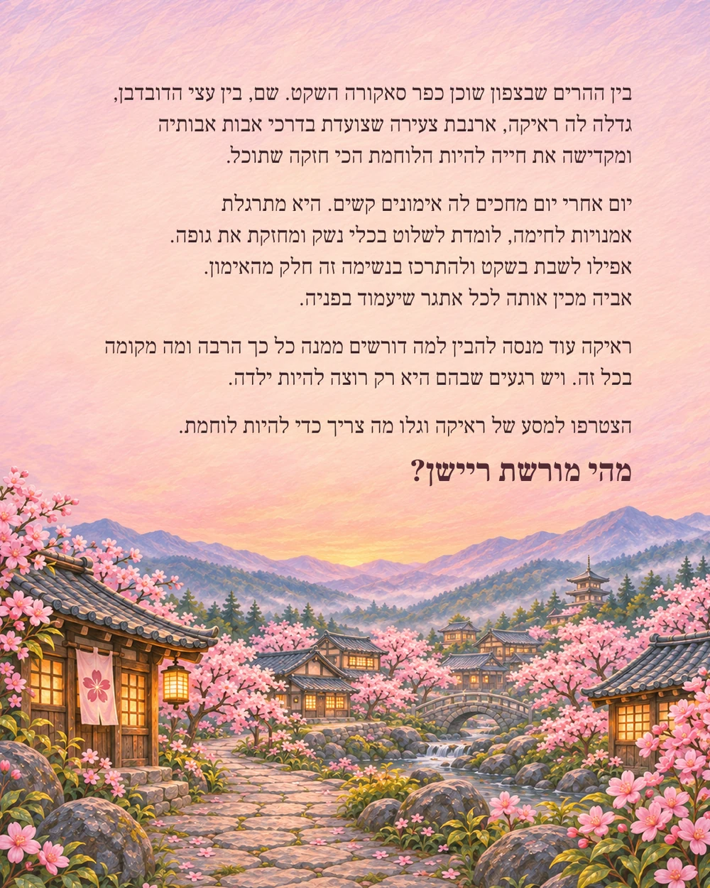

כריכת הספר

שער פנימי

הקדשה

עמוד 1 — הנבואה

בזמן שבו לא תיראה תקווה,
חשכה גדולה תזהם את הממלכה.
מתוך ייאוש תגיע הגאולה,
והעוצמה תגיע מגיבור קטן מידה.
רק אליו האבן תגיב,
באור הלבנה.
עמוד 2 — מדושי

אור השחר נגע בשלג שעל ההר, בעמק שמתחתיו עוד נח ערפל.
על שפת הרכס עמד מדושי הצב. לקח שאיפה עמוקה ונראה שליו הרוח הרימה את שולי גלימתו. לאט פקח את עיניו והביט אל תוך הערפל.
עמוד 3 — הגיע הזמן

מעבר לערפל התגלתה לאט פסגה כהה. עשן דק עלה ממנה. מדושי המשיך להביט. אור אדום הבהב בסדק שבין הסלעים וכבה. כעבור רגע נדלק אור נוסף, נמוך יותר במדרון.
משהו עתיק יומין מבעבע.
אצבעותיו של מדושי התהדקו סביב המטה. מילות הנבואה חזרו אליו. הכוחות שהיו רדומים החלו להתעורר.
״הגיע הזמן.״
עמוד 4 — ראיקה בדוג׳ו

זמן מה קודם לכן, בכפר סאקורה, ראיקה כבר עמדה מול שק האגרוף, כמו בכל בוקר. היא זינקה, הסתובבה באוויר והטיחה את העקב בשק.
פאוו!
החבטה הדהדה באולם, והשק התנדנד לאחור. עד שחזר אליה, היא כבר הייתה מוכנה לבעיטה הבאה.
ראית, אבא? חשבה ראיקה והציצה אל סנסיי ראי. מבטו נעצר על היד שהורידה לרגע כשנחתה.
״לוחם צריך להיות חזק וגם חכם,״ אמר.
גב הכריכה

בין ההרים שבצפון שוכן כפר סאקורה השקט. שם, בין עצי הדובדבן, גדלה לה ראיקה, ארנבת צעירה שצועדת בדרכי אבות אבותיה ומקדישה את חייה להיות הלוחמת הכי חזקה שתוכל.
יום אחרי יום מחכים לה אימונים קשים. היא מתרגלת אמנויות לחימה, לומדת לשלוט בכלי נשק ומחזקת את גופה. אפילו לשבת בשקט ולהתרכז בנשימה זה חלק מהאימון. אביה מכין אותה לכל אתגר שיעמוד בפניה.
ראיקה עוד מנסה להבין למה דורשים ממנה כל כך הרבה ומה מקומה בכל זה. ויש רגעים שבהם היא רק רוצה להיות ילדה.
הצטרפו למסע של ראיקה וגלו מה צריך כדי להיות לוחמת.
מהי מורשת ריישן?
כל עמוד נוסף יופיע כאן רק אחרי אישור מפורש. לא יוחלפו תמונות מאושרות ולא ייווצרו גרסאות חדשות ללא בקשה.